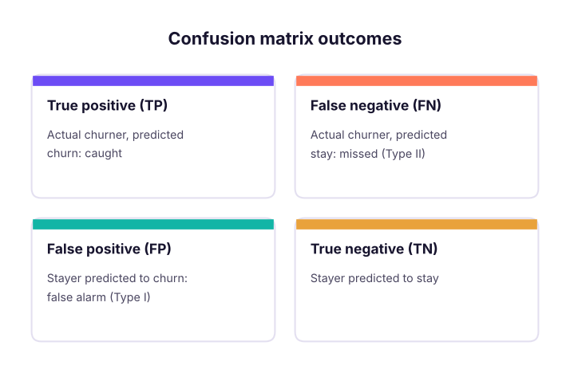
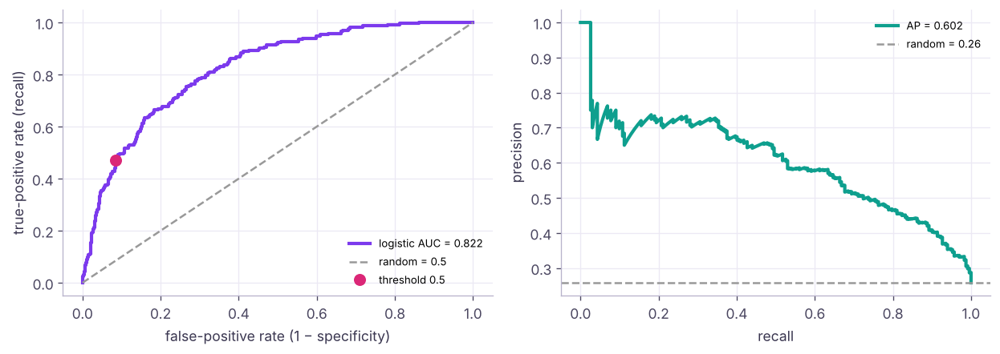
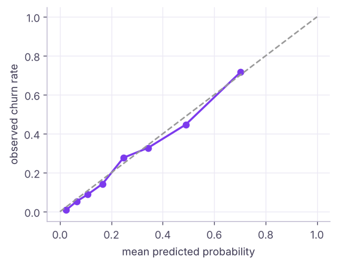

Classification Metrics: Confusion Matrix, Precision, Recall, ROC, PR and Business Value
Measure classifiers properly. The confusion matrix, accuracy and why it misleads, precision, recall, specificity, F1 and F-beta, ROC curves and AUC, precision-recall curves, log loss and calibration, lift and gains charts, choosing thresholds by cost or capacity, and multiclass averaging, using the telecom churn model.
- Build and read a confusion matrix and compute accuracy, precision, recall, specificity and F1
- Plot and interpret ROC and precision-recall curves and their AUCs
- Check probability calibration and log loss
- Choose thresholds by cost, capacity (top-k) or target recall, and present gains/lift
- Use macro, weighted and micro averages for multiclass problems
The confusion matrix
import pandas as pd, numpy as np
from sklearn.model_selection import train_test_split
from sklearn.compose import ColumnTransformer
from sklearn.preprocessing import StandardScaler, OneHotEncoder
from sklearn.pipeline import Pipeline
from sklearn.linear_model import LogisticRegression
from sklearn.metrics import confusion_matrix, accuracy_score, precision_score, recall_score, f1_score, fbeta_score, classification_report
tc = pd.read_csv("telecom_churn.csv")
X = tc.drop(columns=["customer_id", "churn", "total_charges"]); y = (tc.churn == "Yes").astype(int)
Xtr, Xte, ytr, yte = train_test_split(X, y, test_size=0.3, stratify=y, random_state=1)
pre = ColumnTransformer([("n", StandardScaler(), ["senior_citizen", "tenure_months", "monthly_charges", "support_calls"]), ("c", OneHotEncoder(), ["contract", "internet_service", "payment_method"])])
model = Pipeline([("pre", pre), ("lr", LogisticRegression(max_iter=1000))]).fit(Xtr, ytr)
proba = model.predict_proba(Xte)[:, 1]; pred = (proba >= 0.5).astype(int)
tn, fp, fn, tp = confusion_matrix(yte, pred).ravel()
print(pd.DataFrame([[tn, fp], [fn, tp]], index=["actual: stay", "actual: churn"], columns=["pred: stay", "pred: churn"]))pred: stay pred: churn actual: stay 611 57 actual: churn 125 107

Metrics from the matrix
| Metric | Formula | Question it answers |
|---|---|---|
| Accuracy | (TP + TN) / all | How often is the model right overall? |
| Precision | TP / (TP + FP) | Of those we flagged, how many were churners? |
| Recall (sensitivity, TPR) | TP / (TP + FN) | Of all churners, how many did we catch? |
| Specificity (TNR) | TN / (TN + FP) | Of all stayers, how many did we leave alone? |
| F1 | 2·P·R / (P + R) | Balance of precision and recall |
| F-beta | weights recall β times as much | β = 2 when misses are costlier |
print(f"accuracy {accuracy_score(yte, pred):.3f} | precision {precision_score(yte, pred):.3f} | recall {recall_score(yte, pred):.3f} | specificity {tn / (tn + fp):.3f}")
print(f"F1 {f1_score(yte, pred):.3f} | F2 {fbeta_score(yte, pred, beta=2):.3f} | baseline accuracy (always 'stay') {1 - yte.mean():.3f}")
print(classification_report(yte, pred, target_names=["stay", "churn"], digits=3))accuracy 0.798 | precision 0.652 | recall 0.461 | specificity 0.915
F1 0.540 | F2 0.490 | baseline accuracy (always 'stay') 0.742
precision recall f1-score support
stay 0.830 0.915 0.870 668
churn 0.652 0.461 0.540 232
accuracy 0.798 900
macro avg 0.741 0.688 0.705 900
weighted avg 0.784 0.798 0.785 900Accuracy barely beats the "nobody churns" baseline, while recall shows the model misses more than half of the churners at the default 0.5 threshold.
| Which metric matters? | Example |
|---|---|
| Recall | Cancer screening, fraud, churn (missing a positive is costly) |
| Precision | Spam filter (do not hide real mail), expensive interventions |
| Balance (F1) | Both errors matter similarly |
| Specificity | Avoiding false alarms for the majority |
Threshold-free view: ROC and PR curves

print(f"ROC-AUC {roc_auc_score(yte, proba):.3f} | average precision (PR-AUC) {average_precision_score(yte, proba):.3f} | churn base rate {yte.mean():.3f}")ROC-AUC 0.822 | average precision (PR-AUC) 0.602 | churn base rate 0.258
ROC-AUC is the probability that a randomly chosen churner gets a higher score than a randomly chosen stayer (0.5 = random, 1 = perfect). It does not depend on the threshold or on class balance. Average precision summarises the PR curve; its random baseline equals the positive rate, so it reveals weakness on rare classes that ROC-AUC can hide.
Probability quality: log loss and calibration
If the model says 30%, do about 30% of those customers churn?

from sklearn.metrics import log_loss, brier_score_loss
print(f"log loss {log_loss(yte, proba):.3f} (always predicting the base rate: {log_loss(yte, np.full(len(yte), ytr.mean())):.3f}) | Brier score {brier_score_loss(yte, proba):.3f}")log loss 0.436 (always predicting the base rate: 0.571) | Brier score 0.142
Calibration matters when probabilities feed decisions (expected loss = P(default) × amount). Tree ensembles and SVMs are often poorly calibrated; fix with CalibratedClassifierCV (isotonic or sigmoid).
Choosing the threshold
By cost
value_saved, offer_cost = 3000, 500 # a retained churner is worth ₹3,000; each offer costs ₹500
rows = []
for t in np.round(np.arange(0.1, 0.81, 0.05), 2):
p = proba >= t; tp_ = (p & (yte == 1)).sum(); n_off = p.sum()
rows.append({"threshold": t, "offers": n_off, "churners_reached": tp_, "precision": round(tp_ / max(n_off, 1), 3), "recall": round(tp_ / yte.sum(), 3), "profit_inr": int(tp_ * value_saved * 0.4 - n_off * offer_cost)}) # 40% of reached churners accept
res = pd.DataFrame(rows); print(res.to_string(index=False))
print("most profitable threshold:", res.loc[res.profit_inr.idxmax(), "threshold"]) threshold offers churners_reached precision recall profit_inr
0.10 637 221 0.347 0.953 -53300
0.15 532 212 0.398 0.914 -11600
0.20 448 197 0.440 0.849 12400
0.25 394 184 0.467 0.793 23800
0.30 326 165 0.506 0.711 35000
0.35 272 151 0.555 0.651 45200
0.40 226 132 0.584 0.569 45400
0.45 191 119 0.623 0.513 47300
0.50 164 107 0.652 0.461 46400
0.55 130 87 0.669 0.375 39400
0.60 101 72 0.713 0.310 35900
0.65 77 55 0.714 0.237 27500
0.70 54 39 0.722 0.168 19800
0.75 35 25 0.714 0.108 12500
0.80 20 15 0.750 0.065 8000
most profitable threshold: 0.45By capacity: top-k, gains and lift
The retention team can call only 10% of customers per month. Rank by probability and take the top 10%.
order = np.argsort(-proba); ys = yte.to_numpy()[order]
deciles = np.array_split(ys, 10)
gains = pd.DataFrame({"decile": range(1, 11), "churn_rate": [d.mean() for d in deciles]})
gains["cum_%_of_churners"] = (100 * np.cumsum([d.sum() for d in deciles]) / ys.sum()).round(1)
gains["lift"] = (gains.churn_rate / ys.mean()).round(2); gains["churn_rate"] = gains.churn_rate.round(3)
print(gains.to_string(index=False)) decile churn_rate cum_%_of_churners lift
1 0.722 28.0 2.80
2 0.556 49.6 2.16
3 0.400 65.1 1.55
4 0.278 75.9 1.08
5 0.256 85.8 0.99
6 0.144 91.4 0.56
7 0.100 95.3 0.39
8 0.089 98.7 0.34
9 0.033 100.0 0.13
10 0.000 100.0 0.00Calling the top 10% reaches 2.8 times as many churners as random calls (the lift in the first decile), and the top 30% of scores contain about two-thirds of all churners. Gains and lift tables are how marketing and collections teams read models.
By target recall
target = 0.80
i = np.where(rec >= target)[0][-1]
print(f"to catch {target:.0%} of churners use threshold {pthr[min(i, len(pthr) - 1)]:.3f} → precision {prec[i]:.3f}")to catch 80% of churners use threshold 0.245 → precision 0.465
Multiclass metrics
from sklearn.datasets import load_wine
from sklearn.ensemble import RandomForestClassifier
w = load_wine(); Xa, Xb, ya, yb = train_test_split(w.data, w.target, test_size=0.4, stratify=w.target, random_state=0)
pw = RandomForestClassifier(200, random_state=0).fit(Xa, ya).predict(Xb)
print(confusion_matrix(yb, pw))
for avg in ("macro", "weighted", "micro"): print(f"{avg:8s} F1 {f1_score(yb, pw, average=avg):.3f}")[[23 1 0] [ 1 28 0] [ 0 0 19]] macro F1 0.975 weighted F1 0.972 micro F1 0.972
Macro averages classes equally (rare classes count as much as common ones); weighted weights by class size; micro pools all decisions (equals accuracy for single-label problems).
Summary
- Confusion matrix: TP, FP, FN, TN. Accuracy misleads on imbalanced data; compare with the majority baseline.
- Precision = how many flagged are right; recall = how many positives are caught; F1/F-beta balance them.
- ROC-AUC ranks quality independent of threshold; PR-AUC (average precision) is better for rare positives.
- Check log loss and calibration when probabilities drive decisions.
- Choose thresholds by cost, capacity (top-k, gains, lift) or target recall; use macro/weighted averages for multiclass.
1. Fraud is 1% of transactions. A model that predicts "not fraud" for everything has accuracy…
2. Recall answers which question?
3. A spam filter must not hide real emails. Which metric should be high?
4. ROC-AUC = 0.80 means…
5. Which curve is more informative when positives are very rare?
6. The retention team can call only 10% of customers. What should you report?
(1) Train a random forest on the same split and compare ROC-AUC, average precision and lift in the top decile with logistic regression. (2) Calibrate the forest with CalibratedClassifierCV and compare Brier scores. (3) Find the threshold that maximises F2.
Show solution
from sklearn.calibration import CalibratedClassifierCV
rf = Pipeline([("pre", pre), ("rf", RandomForestClassifier(400, min_samples_leaf=10, random_state=0))]).fit(Xtr, ytr)
pr = rf.predict_proba(Xte)[:, 1]; print(roc_auc_score(yte, pr), average_precision_score(yte, pr))
top = np.argsort(-pr)[:len(pr) // 10]; print("lift", yte.to_numpy()[top].mean() / yte.mean())
cal = Pipeline([("pre", pre), ("cal", CalibratedClassifierCV(RandomForestClassifier(400, min_samples_leaf=10, random_state=0), cv=5, method="isotonic"))]).fit(Xtr, ytr)
print(brier_score_loss(yte, pr), brier_score_loss(yte, cal.predict_proba(Xte)[:, 1]))
ts = np.linspace(.05, .9, 35); print(max(ts, key=lambda t: fbeta_score(yte, proba >= t, beta=2)))Q: Precision vs recall: give an example where each matters more. Recall for disease screening or fraud (missing a case is costly); precision for spam filtering or expensive manual reviews (false alarms are costly).
Q: Why can a model with 95% accuracy be bad? With 95% negatives, predicting all negatives gives 95% accuracy and catches no positives; look at recall, precision, PR-AUC and the confusion matrix.
Q: How do you choose a classification threshold? From business costs and constraints: expected profit, team capacity (top-k), or a required recall/precision, validated on held-out data.
Practise more online
Free, trusted places to test yourself on this topic. Links open the original site in a new tab.